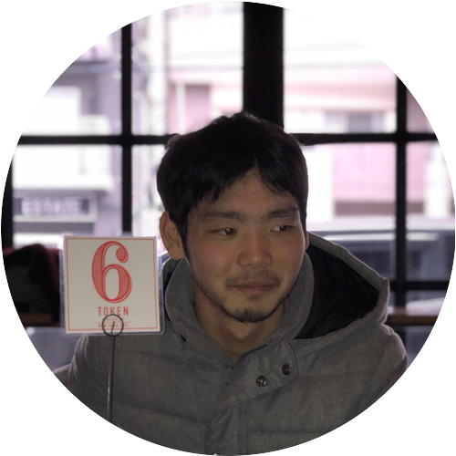

profile

初めまして。平成10年生まれの古東貴文と申します。
現在は21歳で、学生の頃はサッカー部に入っていました。
現在プログラマーになりたいという思いがあり、一年前からプログラミングの勉強を始めました。
プログラミング言語は主に、PHP,Python,javascript,HTML,CSSについて勉強しました。
今回就職活動をするにあたって、webアプリを複数作成しました。
Pythonのdjangoで2個（todoアプリ、社内snsアプリ)、PHPで２個(メモアプリ、Laravelで作成)、javascriptで２個(Timerアプリ、画像表示アプリ)、HTML、CSSで１個(ポートフォリオ)を作成しました。
これから将来に向けて、Pythonのディープラーニングや、情報技術、英語の勉強もしていきたいと思っています。